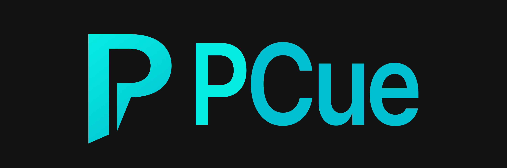

재생 목록
파일을 끌어다 놓고 순서를 맞춥니다. 자동 다음 재생으로 큐를 이어갑니다.

현장에서 쓰는 음원·영상 재생기입니다. 관제 창은 주 모니터에, 영상은 선택한 디스플레이로 보냅니다.
Windows 64비트 · 최신 버전은 GitHub Releases에서 받습니다.
파일을 끌어다 놓고 순서를 맞춥니다. 자동 다음 재생으로 큐를 이어갑니다.
재생·시크·볼륨을 주 모니터에서 다룹니다. 핫키로도 빠르게 조작합니다.
선택한 디스플레이에 전체 화면으로 내보냅니다. 관제 창에는 영상이 뜨지 않습니다.
PCue-Setup.exe를 실행하면 됩니다. 설치 창에서 바탕화면 바로가기와 설치 후 실행 여부를 고를 수 있습니다. 이미 설치한 뒤에는 앱을 켤 때 업데이트를 안내합니다.